STORY
As the world's climate began drastically changing, many blamed the new technology and growing omnic populations for the destruction of the planet. The truth however is unknown as to the real reason why the changes were occurring. In order to resolve this issue, Overwatch created a series of eco-Watchpoints at remote locations in the world to detect fluctuations in environmental patterns.
A well respected climatologist, Mei, was part of a multiyear initiative to be stationed in Antarctica. Unfortunately a disaster occurred and affected a new technology installation of climate manipulation. The aftermath left the scientists with no choice but to enter cryostasis as their rations were dwindling.
A rescue never came, and it was years until the cryogenics chamber was discovered. Mei became the only survivor. Upon awaking, her world had completely changed. Overwatch ceased to exist, and the negative effects of climate change had gotten worse. Mei decided to begin a solo effort in traveling around the world trying to find out the reason for the world's climate changes.
HERO OVERVIEW
Role: Defense
Mei's arsenal is equppied with high tech weather-altering devices. Her Endothermic Blaster is extremely powerful in blasting enemies with icicles and can also slow enemies down in a flurry of frost. In an effort for protection, Mei can enter a short-term Cryo-Freeze making her invulnerable to enemies while also self-healing. For crowd control, her kit allows her to instantaneously build an ice wall to block off enemies and protect allies from incoming attacks.
ABILITIES

Endothermic Blaster
A powerful high-tech weapon that shoots icicle projectiles to damage enemies or can be used to slow down enemies with a storm of frost.

Cryo-Freeze
A tactic to both defend Mei from incoming attacks and to regain health when damaged. During this ability Mei cannot move or attack.

Ice Wall
Can instantly build an ice wall to block off enemies from attacking and to protect allies behind it's barrier.
Blizzard
Deployment of a weather-modifcation drone that creates a blizzard to trap enemies within its radius. Enemies caught in the storm are rendered immobile and vulnerable to attack.